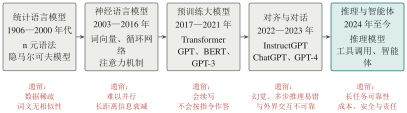

1.3 大语言模型的由来
上一节说明了大语言模型的核心任务是“预测下一个词元”。这个任务并不新，七十多年前就有人在做。为什么直到 2020 年前后才出现真正好用的大语言模型？本节沿着时间线回答这个问题：每一代方法都解决了上一代的一个关键问题，同时留下了新的问题，由下一代来解决。从统计计数到神经网络，从循环结构到 Transformer，从“预训练 + 规模化”到“指令对齐”，再到 2024 年以来的推理模型与智能体，这条链条解释了今天的大语言模型为什么长成现在这个样子。
1.3.1 统计语言模型：用计数估计概率
用概率描述语言的想法可以追溯到 20 世纪初。1906 年，俄国数学家马尔可夫提出了马尔可夫链：下一个状态只取决于当前状态，与更早的历史无关；1913 年他用这一方法统计了普希金诗体小说中元音与辅音的交替规律。1948 年，香农在奠定信息论的论文中，用只看前一两个字母或单词的马尔可夫模型生成了“近似英语”的文字，并用概率度量语言的不确定性[9]。
在此基础上形成的 n 元语法（n-gram）模型做了一个简化：预测下一个词元时，只看它前面的 \(n-1\) 个词元， \[P(x_t\mid x_{<t}) \approx P(x_t\mid x_{t-n+1},\ldots,x_{t-1}), \tag{1-2}\] 而这个条件概率直接用语料中的出现次数来估计。以 \(n=3\)（三元语法）为例： \[P(\text{北京}\mid\text{我},\text{爱})=\frac{\text{“我爱北京”出现的次数}}{\text{“我爱”出现的次数}}.\] n 元语法简单、可解释、计算快，从 1970 年代起长期用于语音识别和机器翻译，后来也用于输入法联想。同一时期发展起来的还有隐马尔可夫模型（Hidden Markov Model，HMM）：它假设我们观察到的序列（例如一段语音的声学特征）是由一串看不见的状态（例如音素）按马尔可夫链逐个产生的。HMM 的数学理论由鲍姆（Leonard Baum）等人在 1960 年代建立，1970 年代起成为语音识别的主流方法，2010 年代初起逐渐被深度神经网络取代。
n 元语法的根本问题是数据稀疏：可能的词元组合多到语料根本覆盖不了。
例 1-3 n 元语法为什么会遇到数据稀疏
设词表大小 \(\lvert\mathcal{V}\rvert=5\times10^{4}\)，训练语料共有 \(10^{10}\) 个词元（约相当于数千万篇新闻）。三元语法最多需要估计多少个不同的三元组概率？语料最多能覆盖其中的多大比例？
| 步骤 | 算什么 | 算式 | 结果 | 这个数从哪来 |
|---|---|---|---|---|
| 1 | 可能的三元组数 | \((5\times10^{4})^{3}\) | \(1.25\times10^{14}\) | 每个位置都有 \(\lvert\mathcal{V}\rvert\) 种选择，三个位置相乘 |
| 2 | 语料中的三元组个数上限 | 约 \(10^{10}\) | \(10^{10}\) | 每个词元位置最多开始一个三元组（题给语料规模） |
| 3 | 最多覆盖的比例 | \(10^{10}\div(1.25\times10^{14})\) | \(8\times10^{-5}\) | 步骤 2 ÷ 步骤 1，且假设语料中没有任何重复 |
数据流向：词表大小 →（三次方）可能组合数；语料规模 → 实际样本数；二者相除得到覆盖率上限。
即使一个重复都没有，语料也只覆盖了约十万分之八的三元组；实际语料高度重复，覆盖率更低。没见过的组合按计数估计概率为 0，于是模型会认为一句完全合理的新句子“不可能出现”。平滑方法（从已见组合中匀出一点概率给未见组合）可以避免零概率，但解决不了更深的问题：“我爱北京”和“我爱上海”在计数表里是毫无关系的两行，模型无法利用“北京”与“上海”都是城市这一相似性。\(n\) 再增大，组合数按 \(\lvert\mathcal{V}\rvert^{n}\) 爆炸，问题只会更严重。
1.3.2 神经语言模型：从计数到向量
解决相似性问题的关键一步发生在 2003 年。本吉奥（Yoshua Bengio）等人提出神经概率语言模型[10]：给每个词学习一个实数向量（即第 1.2.2 小节所说的词嵌入），再用神经网络根据前几个词的向量计算下一个词的概率。意思相近的词在训练中会得到相近的向量，“北京”学到的规律因此能自动迁移到“上海”，没见过的组合也能得到合理的概率。2013 年，Word2Vec 等方法使大规模训练词向量变得廉价，“国王 − 男人 + 女人 ≈ 女王”这样的向量运算让分布式表示广为人知。
另一个问题是只能看前面固定几个词。循环神经网络（Recurrent Neural Network，RNN）每读入一个词就更新一次内部状态，理论上可以把任意长的历史都“记”在这个状态里；长短期记忆网络（Long Short-Term Memory，LSTM）用门控结构控制记住什么、忘掉什么，缓解了长序列训练中的梯度消失[11]。2014 年，序列到序列（Sequence to Sequence，Seq2Seq）模型用一个编码器循环网络读入整句原文、一个解码器循环网络逐词生成译文[12]；同年（2014 年）提出的注意力机制让解码器在生成每个词时直接回看原文中最相关的位置，而不是只依赖编码器最后那一个状态[13]，神经机器翻译由此迅速超过了统计机器翻译。
循环结构仍然留下两个问题：第一，必须读完第 \(t-1\) 个词才能处理第 \(t\) 个词，计算无法在序列方向上并行，难以充分利用擅长大规模并行计算的 GPU（Graphics Processing Unit，图形处理器）；第二，相隔很远的两个词之间的信息要经过很多步传递，仍会衰减。
1.3.3 Transformer：并行处理长距离依赖
2017 年，谷歌的瓦斯瓦尼（Ashish Vaswani）等人提出 Transformer[14]，完全去掉了循环结构，只用注意力。在自注意力中，每个位置生成三个向量：查询 \(Q\)（我在找什么）、键 \(K\)（我能提供什么）和值 \(V\)（我的内容）；用查询与所有位置的键计算匹配程度作为权重，再对值加权求和。任意两个位置之间都只隔“一步”，长距离依赖不再衰减；所有位置的计算可以同时进行，训练能充分利用 GPU 的并行能力。注意力、多头机制、位置编码和整层结构的细节见第 2 章。
Transformer 有三种用法：只用编码器（如 BERT，同时看左右两侧上下文，适合理解类任务）、只用解码器（如 GPT 系列，只看左侧上文，适合生成）、编码器加解码器（如谷歌的 T5 模型，适合翻译等“输入一段、输出一段”的任务）。今天的主流大语言模型几乎都是只用解码器的结构，正好对应第 1.2.2 小节的自回归生成。
1.3.4 预训练与规模化：从专用模型到通用模型
在此之前，自然语言处理的惯例是“一个任务一个模型”：做情感分类就标注一批情感数据训练一个模型，做命名实体识别再标注另一批。2018 年起，预训练范式改变了这一点：先在海量无标注文本上训练一个通用模型，再用少量标注数据微调，或者干脆只用提示，就能适配各种下游任务。
2018 年 6 月，OpenAI 发布 GPT（Generative Pre-trained Transformer，生成式预训练 Transformer，约 1.17 亿参数），用从左到右的下一个词元预测做预训练[15]；
2018 年 10 月，谷歌发布 BERT（Bidirectional Encoder Representations from Transformers），用遮蔽语言建模（Masked Language Modeling，MLM，随机遮住一些词让模型根据两侧上下文猜回来）做预训练，刷新了 11 项理解类任务的纪录[16]；
2019 年 2 月的 GPT-2（15 亿参数）显示，不经微调也能完成一些任务；
2020 年 5 月的 GPT-3（1750 亿参数）显示，只要在输入中写明任务说明并给几个示例，不更新任何参数就能完成翻译、问答、两三位数的加减法等多种任务[3]。这种能力称为上下文学习（In-Context Learning，ICL）。
为什么越做越大？2020 年，卡普兰（Jared Kaplan）等人发现缩放定律：在相当大的范围内，模型的测试损失随参数量 \(N\)、训练数据量 \(D\) 和计算量 \(C\) 的增加按幂律平稳下降，可以提前预测[17]。2022 年，DeepMind 的 Chinchilla 研究修正了“参数优先”的做法：在计算量固定时，参数量和训练词元数应同比例增加，大约每个参数配 20 个训练词元；按此训练的 700 亿参数的 Chinchilla 胜过了 2800 亿参数、但数据不足的 Gopher[18]。缩放定律的形式和推导见第 2 章，训练算力与显存的估算见第 3、4 章。
例 1-4 GPT-3 有多大、训练要算多少
GPT-3 有 \(N=1.75\times10^{11}\) 个参数，训练用了 \(D=3\times10^{11}\) 个词元[3]。(1) 若每个参数以 16 位（2 字节）浮点数存储，仅权重占多少存储（GB 按 \(10^{9}\) 字节计）？(2) 用第 4 章式 （4-2） \(C_{\mathrm{train}}\approx6ND\) 估算训练计算量。(3) 若一张 GPU 的有效算力为 \(4\times10^{14}\) FLOP/s（每秒浮点运算次数）（与第 4 章“训练需要多少张卡”一例的取值相同），单卡需要训练多久？1024 张卡理想并行呢？(4) 按 Chinchilla 的经验比例，这个参数量“应该”配多少训练词元？
| 步骤 | 算什么 | 算式 | 结果 | 这个数从哪来 |
|---|---|---|---|---|
| 1 | 权重存储量 | \((1.75\times10^{11})\times2\) | \(3.5\times10^{11}\) 字节 \(=350\,\text{GB}\) | 参数量 × 每参数 2 字节 |
| 2 | 训练计算量（FLOPs 即浮点运算次数） | \(6\times(1.75\times10^{11})\times(3\times10^{11})\) | \(3.15\times10^{23}\) FLOPs | 每个词元约 \(6N\) 次运算（前向 \(2N\)、反向 \(4N\)），乘以词元数 |
| 3 | 单卡耗时 | \((3.15\times10^{23})\div(4\times10^{14})\) | \(7.9\times10^{8}\) s，约 25 年 | 步骤 2 ÷ 有效算力；\(7.9\times10^{8}\div(3.15\times10^{7}\ \text{s/年})\approx25\) |
| 4 | 1024 卡耗时 | \((7.9\times10^{8})\div1024\) | \(7.7\times10^{5}\) s，约 9 天 | 步骤 3 ÷ 卡数（假设并行效率为 100%） |
| 5 | Chinchilla 建议词元数 | \(20\times(1.75\times10^{11})\) | \(3.5\times10^{12}\) | 每参数约 20 个词元的经验比例 |
数据流向：参数量 →（× 字节数）存储量；参数量 × 词元数 →（× 6）计算量 →（÷ 算力）时间；参数量 →（× 20）计算最优词元数。
步骤 2 的结果与 GPT-3 论文报告的 \(3.14\times10^{23}\) FLOPs 吻合。三个结论：350 GB 的权重放不进任何一张单卡（目前单卡显存约 80～288 GB），训练时还要再存梯度和优化器状态；单卡训练要几十年，必须上千张卡并行——这两点正是第 4 章计算系统要解决的问题；而按 Chinchilla 的标准，GPT-3 的训练数据只有“应有”的约十分之一，后来的模型因此普遍用更多数据训练更小的模型。
规模扩大后，人们还观察到一种现象：某些任务（如多位数加法、多步推理题）的成绩在模型较小时接近随机，规模越过某个点后突然明显提高，这被称为涌现能力（emergent abilities）[19]。
辨析
“涌现”描述的是评测曲线的形状，不等于模型突然获得了某种新能力。后续研究指出，许多“突变”与评测指标有关：如果用“完全答对才得分”这样的离散指标，平滑的进步也会显得像突然跳变；换成按部分正确程度计分的连续指标，曲线往往变得平滑[20]。更稳妥的说法是：规模扩大会提升模型的表示能力和上下文学习能力，但提升的幅度和形态因任务而异，不能据此推断“再大一些就会出现通用智能”。
1.3.5 指令对齐与对话：让模型听懂人的意图
GPT-3 擅长续写，却不擅长“听话”：让它“用三句话解释光合作用”，它可能接着写出一串类似的考题。2022 年 3 月，OpenAI 发表 InstructGPT 研究，用第 1.2.4 小节所说的指令微调加 RLHF 来训练模型。结果显示，人们更喜欢只有 13 亿参数、经过对齐的 InstructGPT 的回答，而不是 1750 亿参数的原始 GPT-3[7]：对齐不增加模型“知道”的东西，但决定了模型能否把知道的东西按人的意图用出来。
2022 年 11 月 30 日，OpenAI 发布基于同类方法训练的对话产品 ChatGPT，自然语言第一次成为普通人调用通用计算能力的接口。此后的发展集中在三个方向：
多模态：2023 年 3 月的 GPT-4 可以读图；2024 年 5 月的 GPT-4o 在一个模型中统一处理文本、图像和语音，可以实时语音对话；Anthropic 于 2024 年 3 月发布的 Claude 3 系列也原生支持图像输入；
长上下文：上下文窗口从 GPT-3 的 2048 个词元，扩展到数十万乃至百万词元；
开放权重：2023 年起，Meta 的 LLaMA 系列（首版仅限研究使用，LLaMA 2 起允许商用）以及 Mistral、通义千问（Qwen）、DeepSeek 等模型公开发布权重，任何人都可以下载、部署和微调（第 1.4.5 小节）。
对话模型普及的同时，问题也暴露出来：模型会一本正经地编造事实（幻觉），对提示措辞很敏感，在需要多步推理和与外部世界交互的任务上容易出错。
1.3.6 推理模型与智能体：2024 年以来
2024 年 9 月，OpenAI 发布 o1 预览版（正式版于同年 12 月发布），开启了推理模型这一类型：模型在给出答案前，先生成一段很长的“思考过程”，尝试多种思路、检查并修正中间结果。这相当于把更多计算花在推理（inference）阶段，称为推理时计算（test-time compute）的扩展：除了“训练时多算”（扩大预训练规模），“回答时多想”成为提升能力的第二条途径，在数学、编程和科学问题上效果尤其明显。训练这类模型的关键方法之一，是在答案可以自动验证的任务上，用“最终答案是否正确”作为奖励做强化学习，通常还配合监督微调等步骤。2025 年 1 月，DeepSeek 公开发布推理模型 DeepSeek-R1 的权重和训练方法，表明这一路线可以用较低成本复现[21]。此后 o3、o4-mini（2025 年 4 月）、Claude 4 系列（2025 年 5 月）、GPT-5（2025 年 8 月）等模型都把“是否深度思考、思考多久”作为可调的能力。
与此同时，模型被越来越多地接入工具：搜索网页、执行代码、操作电脑界面、调用企业系统。2024 年 10 月，Anthropic 推出让模型通过截图和鼠标键盘操作电脑的“计算机使用”能力；编程智能体可以连续数小时自主修改代码、运行测试。大语言模型的角色从“回答问题”扩展为“完成任务”，这就是第 1.4.3 小节和第 6、7 章讨论的智能体。
生成式人工智能的其他路线 大语言模型只是生成式人工智能的一条主线。图像、音频和视频的生成主要沿另外几条路线发展：2013 年提出的变分自编码器（Variational Autoencoder，VAE）学习把数据压缩成一个连续的隐空间再从中采样生成；2014 年古德费洛（Ian Goodfellow）等人提出的生成对抗网络（Generative Adversarial Network，GAN）让一个生成器与一个判别器对抗训练——生成器努力造出以假乱真的样本，判别器努力分辨真假，二者在对抗中共同进步，使生成图像的逼真度大幅提高[22]；2020 年起，扩散模型（diffusion model）先把训练图像一步步加噪直到变成纯噪声，再训练网络学习“逐步去除噪声”的反向过程，生成时从随机噪声出发反复去噪得到图像，成为文生图、文生视频的主流方法。2021 年 1 月，OpenAI 的 DALL·E 展示了根据文字描述生成图像的能力，此后文字与图像、视频的生成逐步汇入多模态大模型。
图 1-7 和表 1-4 把这条链条汇总起来：每一阶段的“遗留问题”正是下一阶段要解决的问题。

图 1-7 大语言模型的发展阶段。框下方是每一阶段遗留的主要问题，它们推动了下一阶段的出现；箭头表示时间先后与问题的传递
表 1-4 大语言模型发展各阶段解决的问题与遗留的问题
| 阶段 | 代表进展 | 解决了什么问题 | 遗留了什么问题 |
|---|---|---|---|
| 1906—2000 年代 | 马尔可夫链、n 元语法、隐马尔可夫模型 | 用概率描述语言，可由计数直接估计 | 数据稀疏；词与词之间没有相似性 |
| 2003—2016 年 | 神经概率语言模型、词向量、循环网络与 LSTM、序列到序列与注意力 | 用向量表示词义，相似的词共享统计规律；可处理变长序列 | 逐词串行计算，难以并行；长距离信息衰减 |
| 2017—2021 年 | Transformer、GPT、BERT、GPT-3、缩放定律 | 并行训练、直接建模长距离依赖；一个预训练模型适配多种任务 | 会续写但不会按指令作答；数据与参数如何搭配 |
| 2022—2023 年 | InstructGPT、ChatGPT、GPT-4、开放权重模型 | 按人的意图作答；自然语言成为通用接口；开始支持图像输入 | 幻觉；多步推理易错；调用工具、与外部世界交互尚不可靠 |
| 2024 年至今 | 推理模型、工具调用、智能体 | 回答前多步思考；调用工具完成任务 | 长任务可靠性、成本、安全与责任 |